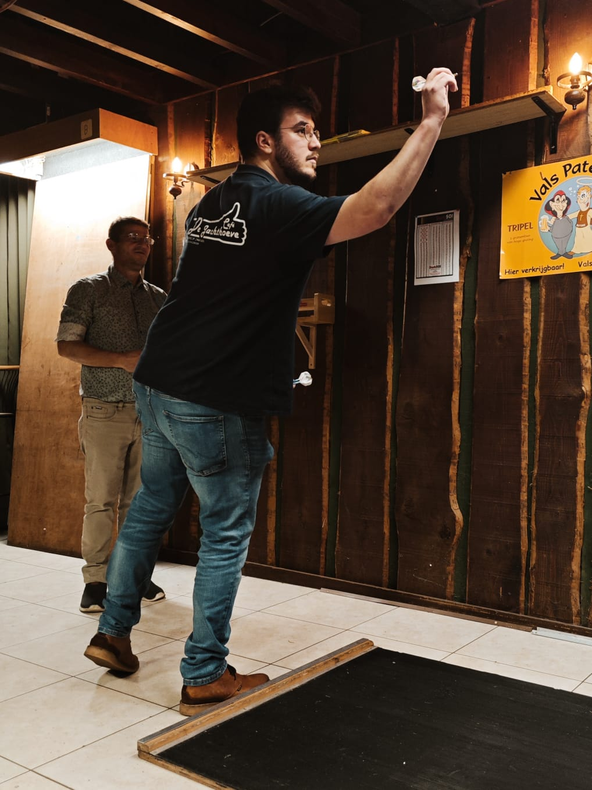

Darten is een fascinerende en vaak onderschatte sport die draait om precisie, concentratie en behendigheid. In deze sport proberen spelers kleine pijltjes, ook bekend als "darts", met uiterste precisie te gooien naar een ronde doelschijf, die bekendstaat als het "dartbord". Het doel is om punten te scoren door de darts in specifieke vakken op het dartbord te plaatsen.
Het dartbord zelf is verdeeld in verschillende secties met verschillende puntenwaarden. Het middelpunt, bekend als de "bullseye", is het meest waardevolle doel, en het behalen van een bullseye levert het hoogste aantal punten op. De andere secties zijn verdeeld in ringen met verschillende puntenwaarden, waarbij de buitenste ring meer punten waard is dan de binnenste ring.
Darters hebben de taak om strategisch te gooien en punten te scoren door hun darts in de gewenste vakken te plaatsen. Het spel vereist niet alleen nauwkeurigheid en precisie, maar ook een diepgaand begrip van de regels en strategieën. Darts is een sport die toegankelijk is voor mensen van alle leeftijden en achtergronden, en het wordt vaak beoefend in informele settingen zoals pubs en recreatiecentra, maar het heeft ook een sterke aanwezigheid op professioneel niveau.
Op professioneel niveau worden darters bewonderd om hun vaardigheid en consistentie, en er zijn wereldwijde toernooien zoals het PDC World Darts Championship waarin de beste spelers ter wereld strijden om de hoogste eer en aanzienlijke prijzengelden.
Darten is op dit moment ook de hobby waar ik mij het meeste met bezighou. Ik ben sinds dit seizoen ook ingeschreven bij een club namelijk de jachthoef troef.
Wij spelen elke week vrijdag een match en natuurlijk is dit zeker een plezante bedoeling. We doen het vooral voor de sfeer en gezelligheid maar natuurlijk willen we altijd winnen.
Ook hier vind u de instagrampagina van onze ploeg op de afbeelding.
Andere kleine bezigheden
- Topbiljart
- Gezelschapspelen
- Wijn degustatie
- Koken